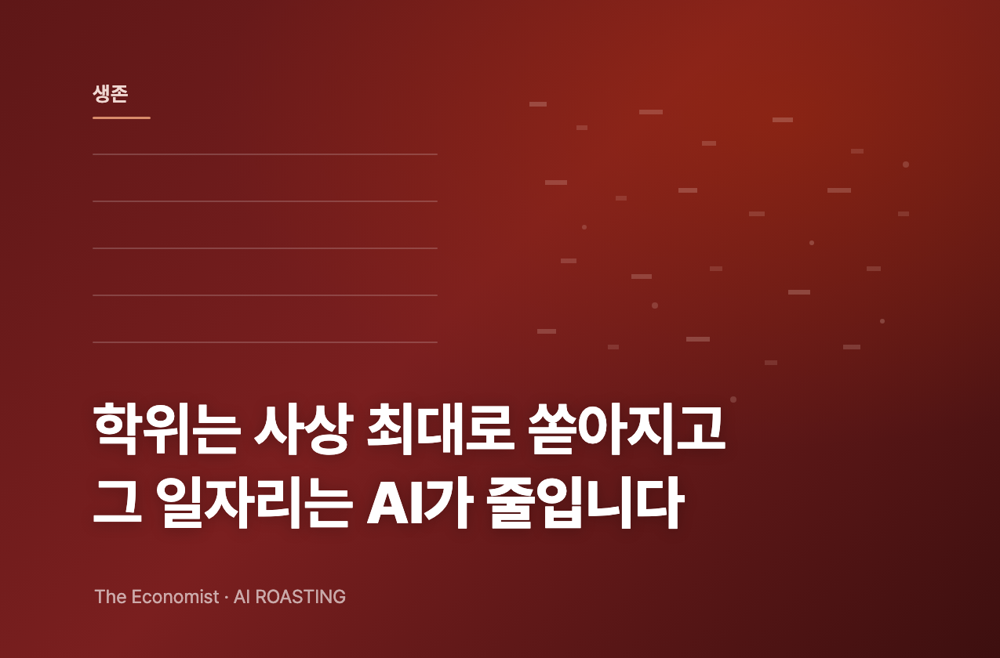

미국에서 컴퓨터공학은 4번째로 인기 있는 전공이 됐습니다. 지난 10년간 평균 학문보다 6.5배 빠르게 늘었습니다.
증가를 이끈 곳은 온라인 비중이 높고 선발이 느슨한 대학입니다. BYU-아이다호는 2년 만에 학위 수가 3배로 뛰어 MIT·스탠퍼드를 앞질렀습니다.
정작 AI는 신입 개발자 수요를 줄이고 있습니다. 학위 공급은 사상 최대인데, 그 학위가 노리는 일자리는 줄어듭니다.
컴퓨터공학 학위가 안전한 선택이라 들으셨습니까?
학위는 사상 최대로 쏟아지는데, 그 일자리는 AI가 줄이고 있습니다.
아이다호주 렉스버그는 인구 4만 명의 대학 도시입니다. 기술 일자리도, 스타트업도, 특허도 거의 없습니다. 그런데 이곳의 BYU-아이다호는 2024년 컴퓨터공학 학위를 2,000개 넘게 줬습니다. 전국 16위, 카네기멜런과 MIT, 스탠퍼드보다 앞섭니다.
이 대학은 지원자의 96%를 받고, 학생 절반 이상이 온라인으로 배웁니다. 2022년엔 같은 학위를 639개만 줬습니다. 2년 만에 3배입니다. 이 글은 한 대학의 이야기가 아닙니다. 채용 시장에서 학위가 보내는 신호가 무엇을 잃고 있는지에 관한 이야기입니다.
학위는 채용에서 가장 오래된 신호입니다. 리더는 이력서의 전공과 학교를 보고 후보의 역량을 짐작합니다. 그 신호가 흔들리면 채용 비용이 오릅니다. 컴퓨터공학 학위가 사상 최대로 쏟아지는 지금, 같은 AI가 부정행위와 속성 졸업을 돕고 신입 개발자 수요까지 줄입니다. 학위 한 줄로 실력을 가늠하던 방식이 더는 통하지 않습니다.
이건 개발 직군만의 문제가 아닙니다. 컴퓨터공학은 AI가 가장 먼저, 가장 세게 친 전공일 뿐입니다. 마케팅, 기획, 재무 어느 직군이든 AI로 빠르게 딴 자격과 AI로 채운 이력서가 곧 책상에 올라옵니다. 컴퓨터공학에서 지금 벌어지는 일은 모든 학위 기반 채용의 예고편입니다.
이코노미스트는 미국 교육부 데이터를 분석했습니다. 결론은 명확합니다. 컴퓨터공학 학위는 폭증했지만, 그 증가를 이끈 곳은 명문대가 아닙니다. 온라인 비중이 높고 선발이 느슨한 대학입니다. 그리고 졸업과 취업 사이의 다리가 동시에 무너지고 있습니다.
첫째, 증가를 이끈 건 온라인·저선발 대학입니다. 컴퓨터·정보과학은 미국에서 4번째로 인기 있는 전공입니다. 지난 10년간 평균 학문보다 6.5배 빠르게 늘었습니다. 그런데 증가율을 가른 변수는 학교의 명성이 아니라 두 가지였습니다. 온라인 비중과 선발 기준입니다. 학생 절반 이상이 온라인으로 배우는 대학은 연 8% 늘었습니다. 선발성 하위 20% 대학은 연 11%, 두 조건을 모두 갖춘 대학은 연 14%를 넘었습니다.
둘째, 속성 졸업이 가능해졌습니다. 대학은 오래도록 학점당 수업료를 받고 수강 한도를 뒀습니다. 학생이 감당할 분량을 가정한 장치였습니다. 지금은 학기당 정액제로 받는 역량 기반 학위가 늘었습니다. 학생은 몇 달, 때로는 몇 주 만에 학위를 끝낼 수 있습니다. 노스텍사스대는 2022년부터 2024년까지 졸업생이 3배, 위치타주립대는 4배로 늘었습니다. 단기 IT 자격을 파는 마이컴퓨터커리어는 거의 6배가 됐습니다.
셋째, AI가 이 흐름을 가속합니다. 모든 분야의 교육자가 AI를 쓴 부정행위에 시달립니다. 그중 컴퓨터공학 학생이 가장 무겁게 씁니다. UC버클리 이고르 치리코프 연구팀이 20개 대학 9만 5,000명 이상을 조사했습니다. 컴퓨터공학 학생의 62%가 AI를 정기적으로 쓴다고 답했습니다. 전체 학생 평균은 37%였습니다. AI를 쓰는 컴퓨터공학 학생 10명 중 1명은 AI로 부정행위를 했다고 인정했습니다.
온라인 수업은 이런 행동을 잡아내기 더 어렵습니다. 무제한 수강과 합쳐지면 AI는 학생이 과정을 빠르게 통과하도록 돕습니다. 컴퓨터공학 학위가 2022년 챗GPT 출시 이후 급증한 건 우연이 아닐 수 있습니다.
넷째, 공급은 느는데 수요는 줄어듭니다. 2024년 신규 컴퓨터·정보과학 학사의 초봉 중간값은 8만 9,000달러였습니다. 석사는 10만 6,000달러를 넘었습니다. 숫자만 보면 여전히 매력적입니다. 그러나 AI가 신입 개발자 수요를 줄이고 있다는 증거가 쌓입니다. 학위 공급이 사상 최대로 늘어나는 바로 그 순간, 그 학위가 노리는 입문 일자리는 줄어듭니다.
구조를 한 줄로 요약하면 이렇습니다. AI가 진입 비용을 낮추면 학위 공급이 폭증하고, 같은 AI가 그 학위를 검증하기 어렵게 만들며, 동시에 그 학위가 향하던 일자리를 줄입니다. 세 힘이 한 방향으로 움직입니다. 학위라는 신호의 가치가 떨어지는 방향입니다.
이 변화는 당신의 책상에서 이렇게 나타납니다. 다음에 이력서를 검토할 때, '컴퓨터공학 학사'나 그 옆 직군의 자격증 한 줄을 보고 예전만큼 안심하기 어렵습니다. 그 한 줄이 6개월 속성 과정인지 4년의 훈련인지, AI가 대신 푼 과제인지 본인이 푼 과제인지 구분되지 않기 때문입니다. 신호가 흐려진 만큼, 검증은 당신의 몫으로 넘어옵니다.
전공과 학교 이름이 보증하던 실력이 흔들리고 있습니다. 신입 개발자 채용이라면 30분짜리 실무 과제나 페어 코딩 세션을 1차 관문으로 넣습니다. AI 없이, 또는 AI를 쓰되 사고 과정을 설명하게 하는 방식으로 설계합니다. 학위가 가린 실제 역량을 직접 봅니다. (소요 시간: 과제 설계 1시간)
AI가 입문 코딩 작업을 대신한다면, 신입에게 똑같은 작업을 시키는 채용은 의미가 줄어듭니다. 신입 직무 기술서를 "AI 산출물을 읽고 검증하고 책임지는 역할"로 다시 씁니다. 무엇을 가르쳐 키울지가 바뀝니다. 채용 기준도 코드 작성 속도가 아니라 판단력으로 옮깁니다. (소요 시간: 직무 기술서 재작성 40분)
컴퓨터공학 학위가 무조건 안전하다는 조언은 이제 절반만 맞습니다. 진로를 묻는 사람에게 초봉 숫자만이 아니라, 신입 채용 추이와 학위 공급량을 함께 보여줍니다. 학위 자체보다 "AI와 함께 일하는 역량"을 어떻게 증명할지를 같이 고민합니다. (소요 시간: 30분 대화)
학위 무용론으로 건너뛰면 안 됩니다. 이 데이터는 학위가 쓸모없다는 뜻이 아닙니다. 명문대의 탄탄한 컴퓨터공학 교육은 여전히 유효합니다. 문제는 "컴퓨터공학 학사"라는 한 줄이 가리키는 실력의 폭이 넓어진 것입니다. 신호를 무시할 게 아니라 보강할 검증 장치를 더해야 합니다.
AI 부정행위 통계는 자기 보고입니다. 10명 중 1명이 부정행위를 인정했다는 수치는 설문 응답입니다. 실제 비율은 더 높을 수도, 응답 편향으로 다를 수도 있습니다. 단일 수치를 결론의 근거로 삼기보다 추세로 읽는 게 안전합니다.
미국 데이터입니다. 교육부 데이터와 초봉은 미국 시장 기준입니다. 한국의 전공 정원, 학위 운영, 채용 관행은 다릅니다. 방향성은 참고하되 수치를 그대로 옮기는 것은 과잉 해석입니다.
학위는 사상 최대로 쏟아지지만, 그 학위가 보증하던 신호는 옅어지고 있습니다. 이제 실력은 학위가 아니라 검증으로 가려야 합니다.
역량 기반 학위(Competency-based degree): 수강 학점이 아니라 정해진 역량 달성 여부로 학위를 주는 방식입니다. 보통 학기당 정액제로 운영해, 학생이 빠르게 통과하면 몇 달 또는 몇 주 만에 학위를 끝낼 수 있습니다. 학습 시간보다 결과 증명에 초점을 둡니다.
선발성(Selectivity): 대학이 지원자를 얼마나 까다롭게 거르는지를 나타내는 지표입니다. 합격률이 낮을수록 선발성이 높습니다. 이 기사에서 선발성 하위 20% 대학은 지원자 대부분을 받는 학교를 뜻합니다.
학위 신호(Credential signal): 채용에서 학위와 전공이 후보의 역량을 대신 알려주는 신호 역할을 한다는 개념입니다. 공급이 늘고 검증이 어려워지면 같은 학위가 보내는 신호의 변별력이 떨어집니다.
초봉 중간값(Median starting salary): 신규 졸업자 초봉을 줄 세웠을 때 한가운데 값입니다. 평균과 달리 극단적으로 높거나 낮은 값에 덜 휘둘려, 일반적인 졸업자의 수준을 보기에 적합합니다.
- The Economist. (2026, June 1). Do you really want that computer-science degree? [Article]. The Economist. (원문 보기 ↗)
- Chirikov, I. 외. (2026). Generative-AI use among undergraduates: Survey of more than 95,000 students at 20 institutions [Research]. University of California, Berkeley.
- U.S. Department of Education. Integrated Postsecondary Education Data System (IPEDS) and distance-learning data [Dataset]. (원문 보기 ↗)